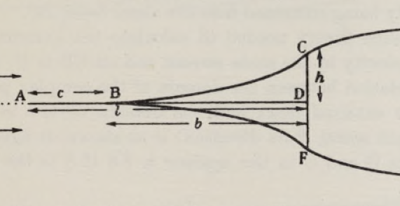
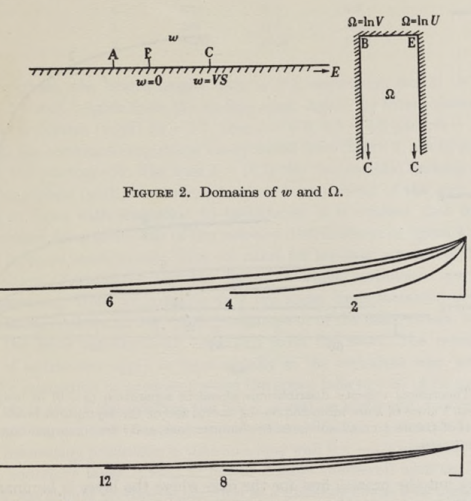
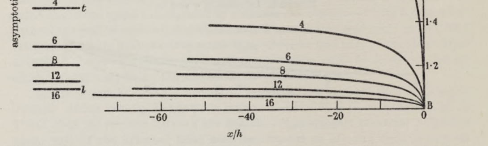
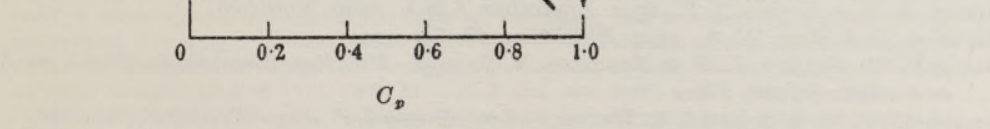

01中文摘要
指出超声速边界层存在两种上游影响机制，其中一种通过分离实现，也存在于亚声速流。为说明该机制，给出亚声速绕台阶流动的定量理论，并比较亚/超声速差异：超声速死水区边界近于直线，亚声速则强烈弯曲；超声速中无论层流或湍流，分离都在更低压力系数下发生，主要原因不是近壁气体密度低，而是死水区前压升更突然；给定死水区压力系数时，亚声速上游影响距离反而略大（最高压力除外）。第二种机制仅作定性讨论，定量理论见第二部分。
原始摘要（英文/原文）
It is pointed out that there are two separate mechanisms for upstream influence through the boundary layer in supersonic flow, and that one of these (that involving separation) operates also in subsonic flow. A quantitative theory of subsonic flow up a step is given to illustrate this. The main differences between the subsonic and supersonic flows are as follows: (i) The boundaries of dead-air regions are nearly straight in supersonic flow but are usually highly curved in subsonic flow. (ii) Separation (whether of the laminar or turbulent layer) occurs at a much lower pressure coefficient in supersonic flow; this is only slightly due to the fact that the fluid nearest the wall is then lighter and so more easily brought to rest; it is due much more to the relative suddenness of the pressure rise ahead of the dead-air region. (iii) However, for a given pressure coefficient in the dead-air region, the distance of upstream influence is somewhat greater in the subsonic flow, except at the highest pressures. A qualitative discussion of the second mechanism of upstream influence, in supersonic flow, is given; for a quantitative theory of this see part II (Lighthill 1953).
02阅读说明
类型：理论分析论文（自由流线保角变换），并以定性/半定量方式与超声速实验比较，非本文实验。材料为14页全文（期刊pp.344–357）与4幅抓取图件；图2（w与Ω平面）未列入图件清单。bundle文本层公式乱码，已核对PDF第5–7、10–12页的式(1)–(7)及图5关系式，符号可确认。信息完整度较高：几何定义、参数k、表1–3、分离判据齐全；但无本文自身实验数据，未给Re、δ、壁温等边界层参数，分离判据借用Howarth线性减速与圆柱湍流分离的经验速度比。 文章类型：期刊
03一句话核心与三句话摘要
亚声速绕台阶的分离上游影响可用自由流线理论定量给出；机制与超声速分离相同，但低压比时影响距离更大。
- 超声速边界层上游影响存在两种机制，其中分离机制在亚声速同样成立，但此前缺乏亚声速的定量理论。 AI概括
- 作者用自由流线保角变换求解低速绕台阶流动，以层流q/V=0.91、湍流q/V=0.67为分离判据，得到k、b/h、c/h、l/h关系表，并与Mair的超声速台阶和探针实验对比。 原文明确
- 结论是只有“边界层增厚—流线曲率”机制为超声速特有；超声速分离所需压比系数远低于亚声速，但给定压比时亚声速上游影响距离在低压比段反而更大。 原文明确
04核心内容清单
| 要点 | 类型 | 重要性 | 原文依据 | 属性 |
|---|---|---|---|---|
| 超声速边界层上游影响有两种独立机制：边界层增厚—流线曲率反馈（i）与分离—死区扩展（ii）。 | 理论框架 | A | p1–2，§1，期刊344–345 | 原文明确 |
| 只有机制(i)严格为超声速特有；机制(ii)在亚声速同样存在，因此可用亚声速绕台阶作定量研究。 | 核心论点 | A | p3，§1，期刊346 | 原文明确 |
| 自由流线保角变换给出参数k=(1/π)ln(U/V)，表1中b/h≈k（k=2–16时b/h=1.86–15.98）。 | 理论结果 | A | p5–6，§2，式(1)、表1、图3 | 原文明确 |
| 层流台阶：l/h=8.5时c/h=2.5（分离点在台阶上游2.5h）；l/h=5.7反推k≈4.6、b/h≈4.6，与Goldstein照片吻合。 | 理论结果与实验对照 | A | p7–8，表2，§2 | 原文明确 |
| 湍流长壁面极限：台阶远高于边界层厚度时，分离点约在上游3.96h处，可供风洞检验并反推0.67判据。 | 理论预测 | A | p8，表3，§2，期刊351 | 原文明确 |
| 亚声速死区边界强烈弯曲、前端尖削；超声速自由流线则接近平直，仅短台阶位于弓形激波后时例外。 | 流态差异 | A | p6图3；p9§3，期刊349、352 | 原文明确 |
| M=2层流分离Cp=8R^−0.4（R=10^5、10^6约0.08、0.03），湍流Cp=0.29，均远低于均匀减速层流的Cp=0.21。 | 定量比较 | A | p10–11，式(6)(7)，期刊353–354 | 原文明确 |
| 超声速分离压比低的主因是压升“过于突然”，近壁流体更轻只解释9%与12%速度降之差。 | 机制判断 | A | p11–12，§3，期刊354–355 | 原文明确 |
| 图5显示低压比时M=0的上游影响距离大于超声速，只有在最高压比时趋势反转。 | 定量比较 | A | p12–13，图5，期刊355–356 | 原文明确 |
| 分离点向上游调整的速度与外部流速同量级，超声速下约为声速；压力脉冲沿近壁慢速层以近声速上传。 | 机制推断 | B | p13，§3，期刊356 | 原文明确 |
| 自由流线理论忽略混合层卷吸，位移厚度轮廓应在C点稍下方击中台阶，故l/h预测略偏大。 | 作者局限 | B | p8，§2，期刊351 | 原文明确 |
| 层流分离判据0.91由Howarth的0.88调整而来，湍流0.67借自圆柱湍流分离，均非本文实验标定。 | 方法局限 | B | p7–8，§2，期刊350–351 | AI概括 |
05引言：研究问题与领域缺口
第1节（p1–3，期刊344–346）指出，按无粘超声速理论，扰动只有在强压缩到当地流速低于声速时才可能上游传播；Ferri（1939）之后的大量实验表明边界层可传递上游影响。作者归纳出两种独立机制：(i) Oswatitsch & Wieghardt（1941）机制——逆压梯度使边界层增厚、顺压梯度使其变薄，位移厚度轮廓在上游开始弯曲，弯曲本身又产生同号压力梯度，形成逐步衰减的反馈；其对数衰减率取决于位移厚度变化率与dp/dx之比，湍流层因响应较弱而衰减更慢。(ii) Lees（1949）、Liepmann等（1949）、Gadd & Holder（1952）机制——足够强的压缩使边界层分离、出现回流与死区，分离点持续向上游扩展，直到死区足够细长、不再引起其前方分离；湍流层不易分离，故上游影响小得多；外部顺压梯度也会减小上游影响。作者强调，只有机制(i)严格为超声速所特有（依赖压力梯度与流线曲率的关系），机制(ii)在亚声速中早已熟知。缺口原文明确为：“Apparently, no effort has been put into any quantitative theoretical study of separation induced upstream in subsonic flow”（p3）。本文目标是至少把绕台阶这一种亚声速情形详细算出，并在§2–3与超声速分离比较；对“沿亚声速层传播”一类理论，作者认为不能脱离粘性效应单独处理，将在第II部分改进。
06流动条件与几何构型
| 项目 | 数值/描述 | 依据 | 备注 |
|---|---|---|---|
| 流动类型 | 二维、定常、不可压低速流动；边界层外按无粘势流处理 | p4–5，§2 | |
| 几何构型 | 两块互成直角的平板对称置于来流；半板CD构成台阶，台阶高h、台阶前平板长l | p4，§2，图1 | |
| 分离点位置 | B点位于台阶上游距离b处；AB=c；分离点由AB上速度分布恰使边界层在B分离确定 | p4–5，§2，图1 | |
| 自由来流速度 | 主流及CE上速度为U | p5，§2，期刊348 | |
| 死区/自由流线速度 | 死区BCD近静止、常压；BC上速度为V<U | p5，§2，期刊348 | |
| 速度比参数 | k=(1/π)ln(U/V)；表1覆盖k=2、4、6、8、12、16 | p5–6，式(1)、表1 | |
| 层流分离判据 | q/V=0.91（由Howarth线性减速的0.88调整） | p7，§2，期刊350 | |
| 湍流分离判据 | q/V=0.67（约相当于圆柱最大速度到湍流分离点的速度降） | p8，§2，期刊351 | |
| 层流台阶长度比 | 表2：l/h=1.94、4.6、8.5、15.5、75、∞，对应k=2、4、6、8、12、16 | p8，表2 | |
| 湍流台阶长度比 | 表3：l/h=3.5（k=2）与∞（k=4） | p8，表3 | |
| 超声速对比马赫数 | 图5取M=0、M=√2、M=2；Cp公式对应M=2 | p12，图5，期刊355 | |
| 对比实验雷诺数 | 层流Cp=8R^−0.4，R=10^5与10^6分别给0.08与0.03；R以从前缘到压力开始上升点为参考长度 | p10–11，§3，期刊353–354 | |
| 对比实验来源 | Mair（1952）超声速台阶/探针；Gadd & Holder（1952）M=2平板入射激波；Goldstein（1938）plate 196低速台阶照片；Johannesen（1952）凹角 | p7–11，§2–3 | |
| 壁面热条件 | 文中未提及（亚声速理论解不含能量方程） | 全文 | |
| 边界层厚度与雷诺数 | 文中未提及（仅以h为参考长度；未给δ、θ、Re） | 全文 |
07核心现象与关键参数
| 参数 | 定义 | 数值 | 关系/说明 | 依据 |
|---|---|---|---|---|
| 速度比参数 k | k=(1/π)ln(U/V)，U为主流/CE上速度，V为死区自由流线BC上速度 | 表1取2–16；k越大V/U越接近1 | k=(1/π)ln(U/V) | p5，式(1)，期刊348 |
| 速度比 V/U | 死区边界BC速度与主流速度之比 | k=2、4、6、8、12、16对应0.456、0.675、0.770、0.822、0.877、0.907 | 由式(1)反算 | p6，表1 |
| 上游影响距离比 b/h | 分离点到台阶的距离b与台阶高h之比 | k=2、4、6、8、12、16对应1.86、3.93、5.95、7.96、11.97、15.98 | 除小k外b/h≈k | p6，表1；p5，期刊348 |
| 自由流线长度关系 b/S | S为自由流线BC的长度 | b/S=(2k²/π)sinh(π/2k)，接近1但无简单表达式 | b/S=(2k²/π)sinh(π/2k) | p5，§2，期刊348 |
| 台阶前平板长度比 c/h | c=AB，分离点前平板长度 | 层流：k=2、4、6、8、12、16对应0.08、0.7、2.5、7.5、63、∞；湍流：k=2为1.6，k=4为∞ | p8，表2、表3 | |
| 台阶长度/高度比 l/h | 台阶前平板长l与台阶高h之比 | 层流：1.94、4.6、8.5、15.5、75、∞；湍流：3.5、∞ | c/h+b/h=l/h | p7–8，式(5)、表2、表3 |
| 层流分离速度比 | 分离点主流速度与V之比 | 0.91 | p7，§2，期刊350 | |
| 湍流分离速度比 | 分离点主流速度与V之比 | 0.67 | p8，§2，期刊351 | |
| 长壁面湍流分离距离 | l/h=∞、充分发展湍流、台阶远高于边界层厚度 | 约3.96h（k=4，b/h=3.9） | p8，表3，期刊351 | |
| M=2层流分离压比系数 | Cp=Δp/(½ρU²)，R为从前缘到压力开始上升点的雷诺数 | Cp=8R^−0.4；R=10^5为0.08，R=10^6为0.03 | Cp=8R^−0.4 | p10，式(6)，期刊353 |
| M=2湍流分离压比系数 | Cp=Δp/(½ρU²) | 0.29（Gadd & Holder实验值在±10%内） | Cp=0.29 | p11，式(7)，期刊354 |
| 均匀减速层流分离压比 | M=2均匀减速边界层分离时的Cp | Cp=0.21（速度降约9%）；M=0时速度降12% | p11，§3，期刊354 | |
| 图5亚声速压比关系 | M=0时b/h对Cp的关系 | (U²−V²)/U²=1−e^(−π/k) | (U²−V²)/U²=1−e^(−π/k) | p12，图5，期刊355 |
| 上游影响传播速度 | 分离点向上游调整的速度 | 亚声速与外部流速同量级；超声速约声速（0.5 in.约50 μs） | p13，§3，期刊356 |
08方法与数据
第2节（p4–9，期刊347–352）建立二维不可压绕台阶的自由流线模型。几何为两块互成直角的平板AD与CF对称置于来流中，半板CD构成高h的台阶，台阶前平板长l；分离发生在B点，B距台阶为b，AB=c。B之后外部流动沿自由流线BC流动，BC包围近静止、常压的死区BCD；CE近似取为自由来流压力下的自由流线。外部无粘流对每个b/h并不唯一，对应死区不同超压；需选取AB上的速度分布恰好使边界层在B分离的那一个解。作者用复势w平面与Ω=ln(dw/dz)=ln q−iθ平面的共形对应（图2，未抓取）求解，引入参数k=(1/π)ln(U/V)（式1），得到映射式(2)、自由流线内禀方程式(3)与分离点前速度分布式(4)；由c/h与b/h之和满足式(5) c/h+b/h=l/h确定l/h。层流全AB情形采用Howarth（1938）线性减速分离判据q/V=0.88，并按图4速度曲线形状不利程度调整为0.91；湍流取q/V=0.67（约相当于圆柱最大速度到湍流分离点的速度降）。据式(5)与表1反算表2、表3。第3节（p9–13）将结果与Mair（1952）超声速台阶/探针实验、Gadd & Holder（1952）M=2平板入射激波实验、Goldstein（1938）plate 196照片及Johannesen（1952）凹角实验对比。本文无实验、无网格与不确定度分析。
| 项目 | 内容 | 依据 | 备注 |
|---|---|---|---|
| 研究类型 | 理论分析（自由流线保角变换）加与已有实验的半定量比较；无本文实验与数值模拟 | p1–13 | |
| 外部无粘流模型 | 二维不可压势流；死区BCD为常压，BC为自由流线，CE近似为自由来流压力流线 | p5，§2，期刊348 | |
| 数学方法 | 复势w平面与Ω=ln(dw/dz)=ln q−iθ平面共形映射（图2） | p5，§2，式(2) | |
| 自由流线方程 | 内禀方程kθ=tanh^−1√(s/S)，s=w/V沿BC | p6，式(3) | |
| 速度分布 | x=−S∫_0^{ln(q/V)}e^−τ d{tan²(kτ)}，用于给出AB上的q/V(x) | p6，式(4)，期刊349 | |
| 长度闭合条件 | c/h+b/h=l/h，用于由c/h与b/h反算l/h | p7，式(5)，期刊350 | |
| 层流分离判据 | Howarth（1938）线性减速q/V=0.88，按图4曲线形状调整为0.91 | p7，§2，期刊350 | |
| 湍流分离判据 | 取q/V=0.67，作者称约等于圆柱最大速度到湍流分离点的速度降 | p8，§2，期刊351 | |
| 结果整理 | 表1给k–V/U–b/h；表2给层流b/h–c/h–l/h；表3给湍流b/h–c/h–l/h | p6–8，表1–3 | |
| 实验对照 | Goldstein（1938）plate 196低速台阶照片（l/h=5.7）；Mair（1952）超声速台阶与探针；Gadd & Holder（1952）M=2入射激波；Johannesen（1952）凹角 | p7–11，§2–3 | |
| 不确定度与误差分析 | 文中未提及；分离判据为借用经验值，作者称“任何相当精确的计算都将非常艰巨” | p7，§2，期刊350 | |
| 网格/数值参数 | 不适用（解析理论） | 全文 |
09核心推导与公式
把台阶后的常压死区视为自由流线边界，用复势平面到对数速度平面的共形映射求出整个外部无粘流；分离位置由“AB上速度分布恰使边界层在B分离”这一条件选出，从而把死区压力、分离距离b与台阶长度l联系起来。
关键假设
- 二维、定常、不可压、无粘外部流；边界层仅提供分离判据
- 死区BCD内速度近零、压力均匀；BC为自由流线，CE近似处于自由来流压力
- 边界层在AB上保持层流（或从起点即充分湍流，取上限）
- 分离由主流速度降到V的某一固定比例判定，忽略分离点处速度梯度无限大对判据的影响
- 忽略混合层卷吸对位移厚度轮廓的修正（仅在第2节末讨论其使l/h略偏大）
推导过程
台阶高h、台阶前平板长l；分离点B距台阶b，AB=c。B后外部流沿自由流线BC包围常压死区BCD，CE取自由来流压力。对每个假定的死区压力，外部无粘流有不同的分离位置与AB上速度分布。
主流与CE上速度为U，BC上速度为V<U；定义k使U/V与死区压升一一对应。
w为复势，Ω=ln(dw/dz)=ln q−iθ；图2给出两平面的对应，映射关系为式(2)，其中S为自由流线BC的长度。
由式(2)令w沿BC变化，得到斜率θ与弧长s=w/V的关系式(3)；据此可积分出BC形状（图3）。
沿AB（壁面流线）积分式(2)，得到q/V随x/h的分布（图4）；x以分离点B为原点向上游为负。
台阶前平板长度由分离点前长度c与分离点后长度b相加得到，除以h即式(5)；c/h与b/h均为k的函数。
在每个k对应的q/V(x)曲线上找一点A，使从A发展的边界层在B处速度降到规定比例：层流取0.91（Howarth 0.88调整），湍流取0.67。由此得c/h(k)，再由式(5)得l/h(k)，列于表2、表3。
表1给出b/h随k的变化；除小k外b/h≈k，且b/S有解析式。层流k=16对应无限长板；湍流k=4对应无限长壁面，分离距离约3.96h。
适用边界：推导仅适用于二维定常不可压外部势流；分离判据为借用经验值，且B点速度梯度无限大，常用近似分离条件本不适用；自由流线理论忽略混合层卷吸与再附区回流量，作者预计l/h略偏大；层流到湍流转捩只取层流与充分湍流两个极限；k=16的层流无限长板为不可实现的极限情形；无本文实验标定，b/h与表2、表3的精度未量化。
10结果：主要发现与关键证据
自由流线解（p5–7，表1、图3、图4）：k=2、4、6、8、12、16分别对应V/U=0.456、0.675、0.770、0.822、0.877、0.907，b/h=1.86、3.93、5.95、7.96、11.97、15.98；除小k外b/h≈k，且b/S=(2k²/π)sinh(π/2k)。图3显示亚声速死区边界强烈弯曲、前端尖削。图4给出q/V随x/h的分布，并标出层流（i）与湍流（t）的分离水平。层流结果（p7–8，表2）：k=16时c/h=∞、l/h=∞；k=12时b/h=12、c/h≈63、l/h≈75；k=8时b/h=8.0、c/h=7.5、l/h=15.5；k=6时b/h=6.0、c/h=2.5、l/h=8.5；k=4时b/h=3.9、c/h=0.7、l/h=4.6；k=2时b/h=1.86、c/h=0.08、l/h=1.94。文中举例l/h=8.5时分离点在台阶上游2.5倍台阶高处；由Goldstein照片l/h=5.7反推k≈4.6、b/h≈4.6，与照片吻合。湍流结果（p8，表3）：k=4时b/h=3.9、c/h=∞、l/h=∞；k=2时b/h=1.9、c/h=1.6、l/h=3.5；预测无限长壁面、充分发展湍流层、台阶远高于边界层厚度时，分离点约在上游3.96h处。超声速比较（p9–11）：自由流线远比图3平直，只有在短台阶/探针位于弓形激波后（当地亚声速）才出现图3式弯曲；楔形死区角与锥形死区半角会自行调整到压升刚好引起分离。M=2层流分离压比系数Cp=8R^−0.4（R=10^5与10^6分别约0.08与0.03）；湍流Cp=0.29；均匀减速层流M=2时速度只降约9%、Cp=0.21（M=0时为12%）。Mair探针实验的锥形段激波半角38–39°（马赫角30.7°）、锥角约20°、对应Cp约0.30–0.33。图5（p12）把b/h对Cp作图：M=0曲线由(U²−V²)/U²=1−e^(−π/k)给出，M=√2与M=2由斜激波表给出；低压比时M=0的上游影响明显更大，只有在最高压比时才反转。第3节末（p13）指出分离点向上游调整的速度与外部流速同量级，超声速下约为声速（Mair：约0.5 in.行程用约50 μs）。
| 发现 | 证据 | 证据类型 | 强度 | 位置 | 属性 |
|---|---|---|---|---|---|
| 超声速边界层上游影响可分解为增厚—曲率反馈与分离—死区扩展两种机制，后者在亚声速同样成立。 | §1对两类机制及文献的归纳；明确只有机制(i)为超声速特有 | 理论归纳 | 强 | p1–3，§1，期刊344–346 | 原文明确 |
| 自由流线理论给出b/h≈k，亚声速死区边界强烈弯曲并与超声速的近直线形成鲜明对比。 | 表1（k=2–16，b/h=1.86–15.98）；图3的六条自由流线形状 | 解析结果 | 强 | p5–6，式(1)、表1、图3 | 原文明确 |
| 层流绕台阶可用l/h预测分离位置：l/h=8.5时分离点在台阶上游2.5h；l/h=5.7时k≈4.6、b/h≈4.6，与Goldstein照片一致。 | 表2与式(5)反算；与Goldstein（1938）plate 196照片对照 | 理论—实验对照 | 中 | p7–8，表2，期刊350–351 | 原文明确 |
| 充分湍流长壁面的台阶分离距离约为3.96h，可作为风洞检验并反推湍流分离判据的预测。 | 表3：k=4、b/h=3.9、c/h=∞、l/h=∞ | 理论预测 | 中 | p8，表3，期刊351 | 原文明确 |
| M=2层流分离Cp=8R^−0.4（10^5与10^6约0.08、0.03），湍流Cp=0.29，均远低于均匀减速层流的0.21。 | 式(6)(7)；Stewartson均匀减速9%速度降与Howarth 12%的对比 | 定量比较 | 强 | p10–11，式(6)(7)，期刊353–354 | 原文明确 |
| 超声速分离压比低主要因为压升突然，而非近壁流体更轻；后者只解释9%与12%速度降之差。 | 湍流压升在一个边界层厚度内完成，层流约十个厚度；Cp对比 | 机制论证 | 中 | p11–12，§3，期刊354–355 | 原文明确 |
| 给定Cp时，低压比段亚声速上游影响距离大于超声速，只在最高压比时反转。 | 图5：M=0、√2、2三条b/h–Cp曲线；M=0曲线由(U²−V²)/U²=1−e^(−π/k)给出 | 参数比较 | 中 | p12–13，图5，期刊355–356 | 原文明确 |
| 分离点向上游调整的速度与外部流速同量级，超声速下约为声速。 | Rubach（1913）圆柱起动照片；Mair探针约0.5 in.行程约50 μs | 实验类比与量级估计 | 弱 | p13，§3，期刊356 | 原文明确 |
11机制解释与论证链
作者给出的机制链：台阶迫使外部流动在B附近形成常压死区，死区压力越高，外部流在AB上的减速越强、分离点越向上游；分离点位置自动调整到“AB上速度分布恰使边界层在B分离”。在亚声速中，外部流可整体感受台阶，AB上速度分布是连续、逐渐的减速，因此需要较大的压比系数才能分离，而死区前缘因自由流线弯曲而高度尖削。在超声速中，外部流在分离点前近似均匀，压升只能由激波突然完成；边界层在很短的流向距离内遭遇强逆压梯度，故在很小的Cp下即分离（M=2层流0.03–0.08，湍流0.29）。作者强调这种“突然性”比近壁流体密度低更重要：均匀减速时M=2层流速度降9%、M=0为12%，只能解释很小的差别。上游影响一旦由分离建立，分离点以近声速向上游扩展，直到死区足够细长。上述机制为原文明确；其中“近壁慢速层以近声速传递压力脉冲”的可压缩图像属于作者定性说明。
12讨论：结论、贡献与局限
作者论证链为：台阶几何给定后，死区压力决定外部无粘流的分离位置与AB上的速度分布；边界层在该分布下恰在B分离，便唯一选出实际死区压力。由于亚声速外部流可在整个流场中感受扰动，台阶前速度分布是逐渐减速的，分离所需的压比系数可以较大；超声速外部流在分离点前基本均匀，压升只能通过激波突然完成，故分离在很小Cp下发生。作者进一步用量级说明“突然性”比“近壁流体更轻”更重要：Stewartson（1949）均匀减速M=2时速度降9%（对Cp=0.21），而Howarth（1938）M=0时为12%，二者差别只反映近壁密度；实测M=2层流分离Cp仅0.03–0.08，远小于0.21。湍流层在超声速下压力在约一个边界层厚度内完成上升，层流则约十个厚度，因此层流问题更接近“多大的激波刚好使其分离”，湍流更接近突跃激波判据。作者也指出图5的比较并不等价于分离距离：M=0死区前端高度尖削、不够显著，实际分离点可能比按小压升推断的更接近超声速值。局限包括分离判据粗略、B点速度梯度无限大导致常用近似判据不适用、无低速台阶系统实验、自由流线理论忽略混合层卷吸（位移厚度轮廓应在C点稍下方击中台阶）、层流/湍流转变只取上下限。
作者结论
作者结论（摘要p1与§3）：(1) 超声速边界层上游影响有两种机制，其中分离机制在亚声速同样运行；本文给出亚声速绕台阶的定量理论。(2) 亚声速死区边界通常高度弯曲，超声速则接近直线。(3) 无论层流还是湍流，超声速分离发生在低得多的压比系数下；这主要归因于死区前压升的相对突然性，近壁流体更轻只是次要原因。(4) 给定死区压比系数时，亚声速的上游影响距离略大，最高压比时除外。作者还给出层流/湍流台阶的l/h–c/h–b/h表，并预测充分湍流长壁面的分离距离约3.96h。
主要贡献
- 首次给出亚声速分离诱导上游影响的定量理论（绕台阶自由流线解）。
- 用统一的k参数把死区压升、分离距离b/h、台阶前长度c/h与总长l/h联系起来，给出表1–3。
- 明确区分两种上游影响机制，并指出只有增厚—曲率机制为超声速特有。
- 把亚声速台阶与超声速台阶/探针、入射激波实验作半定量比较，解释超声速为何在低压比下分离。
- 为后续自由干扰（free interaction）理论提供了亚声速参照与几何标度。
局限与未解决问题
作者承认：分离判据只能借用Howarth线性减速结果并作形状修正，任何较精确计算都“非常艰巨”；B点速度梯度无限大，常用近似分离条件不适用；缺少低速绕台阶的系统实验来标定分离点；自由流线理论高估尾迹宽度、忽略混合层卷吸，使位移厚度轮廓应在C点稍下方击中台阶，故l/h预计略大；转捩只取层流与充分湍流两极限。AI识别的局限：二维定常不可压，未含压缩性、壁温与热流；未给Re、δ、θ，无法把b/h换算为绝对长度或与具体风洞对比；层流0.91与湍流0.67均为外部借用值，误差未量化；表2中k=12的bundle OCR为“63/75”，按式(5)校核应为c/h≈63、l/h≈75，原表小数位需回原文核对；图2未抓取，映射细节只能依据正文式(2)。
13对高速流动与工程的意义
对高速流动/工程的意义（多为AI推断，需结合原文限定）：本文把“上游影响距离”分解为可计算的两条通道，说明亚声速/跨声速进气道、台阶、凹腔、控制面缝隙前的分离可由自由流线几何加一个分离判据估算；b/h≈k与l/h–c/h表可用于快速判断分离是否波及上游关键截面。对SBLI研究，本文提供了“超声速分离压比低是因为压升突然”的经典论证，后续自由干扰理论正是沿此思路发展；其亚声速对照可用于解释低速风洞与飞行Re下分离长度的差异。本文不能回答：可压缩亚声速/跨声速的定量修正、湍流边界层详细结构、转捩位置影响、三维与壁面热效应；也不能给出绝对分离长度（缺Re、δ）。
14核心图件




15可引用原文素材
| 原文短句 | 可支持的观点 | 位置 | 使用建议 |
|---|---|---|---|
| “there are two separate mechanisms for upstream influence through the boundary layer in supersonic flow” | 两种上游影响机制 | p1，Abstract | 作为机制二分的总纲引用 |
| “one of these (that involving separation) operates also in subsonic flow” | 分离机制并非超声速特有 | p1，Abstract | 支撑亚声速可比性 |
| “only mechanism (i) is strictly peculiar to supersonic flow” | 增厚—曲率机制为超声速特有 | p3，§1 | 区分两种机制的适用域 |
| “in supersonic flow the free streamlines, instead of being shaped as in figure 3, are much more nearly straight” | 亚/超声速死区形状差异 | p9，§3 | 说明差异(i) |
| “Separation (whether of the laminar or turbulent layer) occurs at a much lower pressure coefficient in supersonic flow” | 超声速更易分离 | p1，Abstract | 支撑差异(ii) |
| “the pressure rise in the supersonic flow is too sudden” | 突然性是主因 | p11，§3 | 机制论证的核心短句 |
| “for the lower values of Cp the upstream influence is distinctly greater when M = 0” | 低压比时亚声速上游影响更大 | p12，§3，图5附近 | 支撑差异(iii) |
| “should produce separation at a distance about 3-96 upstream” | 湍流长壁面分离距离预测 | p8，§2 | 作为可检验预测引用 |
16最终核验
| 核验项 | 结论 |
|---|---|
| 仅基于全文 | 是：仅使用bundle全文、图注与图件清单，并用原PDF第5–7、10–12页核对公式；未引入外部文献或知识。 |
| A 级要点有依据 | 是：A级条目均带页码、式号、表号或图号；式(1)–(7)、表1–3、图3–5均可定位。 |
| 属性标注 | 是：three_sentence、core_points、findings均标注原文明确/AI概括/AI推断；借用经验判据与作者推测分别注明。 |
| 覆盖范围 | 覆盖§1机制与缺口、§2自由流线理论与表1–3、§3亚/超声速比较、图5与传播速度；IMRaD四节均有实质内容，推导逐步给出。 |
| 无编造 | 是：未编造页码、图号、公式或数据；表2 k=12的OCR歧义已注明并按式(5)校核；未给出的Re、δ、壁温、不确定度均写“文中未提及”。 |
需回原文确认
- 表2中k=12行的c/h与l/h原文小数位究竟为6.3/7.5还是63/75？按式(5)只能是后者，但需回原表确认。
- 层流判据0.91由0.88调整0.03的依据仅是图4曲线形状，是否有定量误差估计？
- 湍流判据0.67借自圆柱湍流分离，用于台阶死区流动的适用性如何？
- 自由流线理论忽略混合层卷吸后，3.96h的预测会偏低多少？
- 图5中M=0、√2、2三条曲线在高Cp端交叉的物理含义是什么？
- 分离点以近声速上游传播的论断只有量级估计，是否有直接时间分辨测量支持？
17关联文献
依据标签、板块、构型与作者脉络自动关联，可据此追踪同一问题的前序与后续工作。
18引用格式
选择期刊风格后复制；出处保留原刊名。BibTeX 可直接用于 LaTeX。
引用格式
Lighthill, M. J. & Newman, M. H. A. 1953 On boundary layers and upstream influence. I. A comparison between subsonic and supersonic flows. Proceedings of the Royal Society of London. A. Mathematical and Physical Sciences 217 (1130), 344–357. https://doi.org/10.1098/rspa.1953.0067
PDF上传 PDF 并更新本页
本页缺少全文、摘要或图件时，可在浏览器本地补入 PDF。解析完全在本机完成，不上传网络；完成后会更新本页的 PDF 打开链接、原摘要、IMRaD 机器抽取、关键句与含图页面。复杂的公式语义与中文深度解读仍以原文和既有精读记录为准。
Zotero 笔记摘录
用渐近理论完善了自由干扰理论和三层结构理论